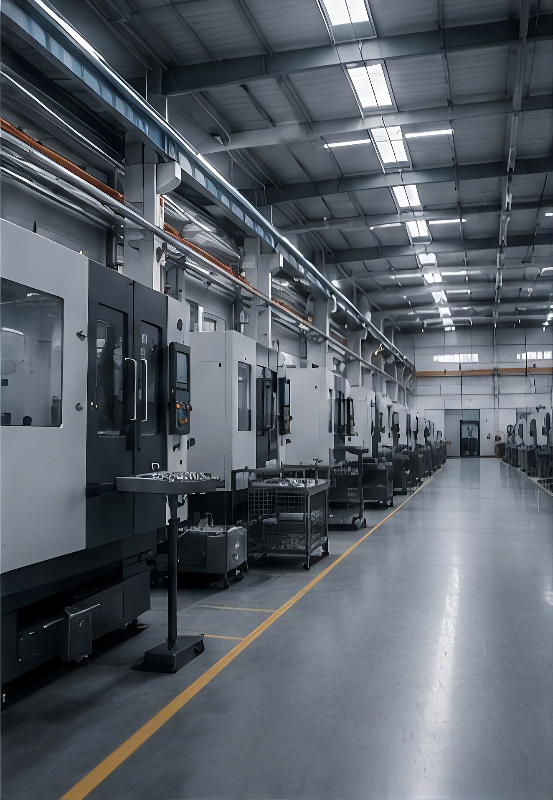

行业制造方案
围绕航天、医疗器械、汽车、机器人、电子、半导体与新能源等行业需求，整合材料、工艺、检测和交付资源，形成可复用的行业方案。
9+行业场景方案
280+制造与检测设备
FAI/CMM质量文件支持
99.8%准时交付率
选择你的行业场景
不同应用对材料性能、尺寸精度、表面处理、验证资料和交付节奏有不同要求。行业方案用于快速组织需求、识别风险并匹配制造能力。





把行业要求转成可制造方案
从材料选择、结构评审、工艺路线、检测计划到交付资料，工程团队围绕行业应用提前识别制造风险，减少验证周期中的反复修改。
DFM前置结构与工艺评审
CMM关键尺寸检测支持
FAI首件与交付资料
多材料金属、塑料与复合材料
表面阳极、电镀、喷涂等
批量从样件到稳定复购
行业项目交付路径
方案页面可复用于其他行业子页面，只需替换行业需求、典型零件、推荐材料与质量资料即可。
01应用识别确认零件用途、工作环境、批量阶段和验证目标。
02能力匹配匹配材料、工艺、表面处理和检测文件要求。
03样件验证完成首件确认、尺寸复核和可制造性反馈。
04批量交付沉淀工艺参数与质量记录，支持稳定复购。
需要匹配行业制造方案？
上传图纸或说明应用场景，我们会按行业要求评估材料、工艺、质量文件和交付节奏。